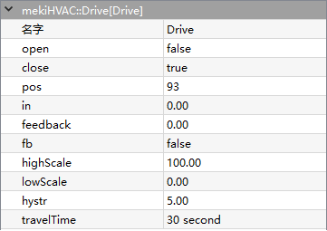
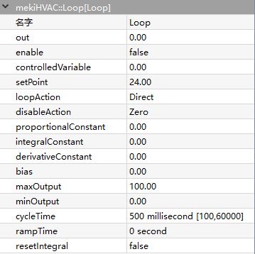
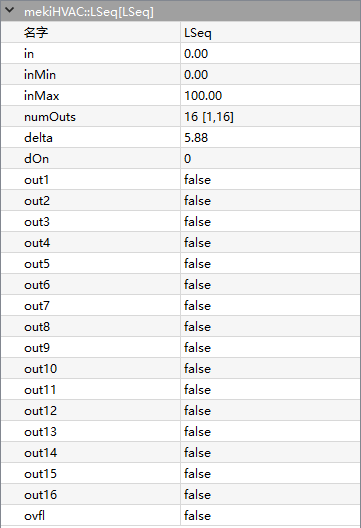
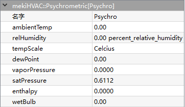
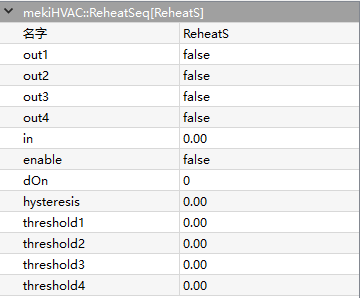
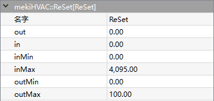
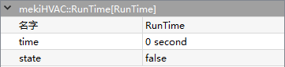
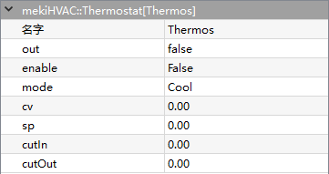

mekiHVAC
- Drive
- 
Drive component provides the mechanism to drive a floating type actuator with two outputs (open and close control). A single input with scale factor determines the desired position which controls the hardware output.
The open and close operation time is based on the full stroke travel time, travel time. When the calculated position hits the minimum (0%) or maximum (100%), the open or close output will continue running for the drive travel time to make sure the actuator position is in place.
- Parameters:
Open (boolean) – Drive current open state (read only), equal to true when drive is run while false is stop
Close (boolean) – Drive current close state (read only), equal to true when drive is run while false is stop
Pos (integer) – Current calculated position based on drive time
In (real) – Drive position, scale from 0% to 100% using the highscale and lowscale parameters
Feedback (real) – Actual schedule feedback signal, not calculated value
Fb (boolean) – Whether or not to use the Fb signal
Highscale (real) – highest value of input value and equals to 100%, default=100.00
Lowscale (real) – lowest value of input value and equals to 0%, default=0.00
Hystr (real) – minimum changes of the input value to activate the open and close operation
TravelTime (integer) – Drives full stroke travel time in seconds(s), default = 30s
{kind=link}
- Loop
- 
Loop component provides proportional, integral and derivative (PID) control action to the output based on the process value (input) and set point value. It monitors the process value, compares the process value to the set point, and generates the output value.
PID loop control can be difficult to tune and (often for this reason) is seldom used. However, in certain cases, PID control may be needed. An example is the control of a process with a “long reaction time”, such as temperature control of a large mass. For such a lag-oriented system, the derivative component of the PID loop output can help preventing “overshoot” that might otherwise result from PID control.
- Parameters:
Out (real) – Result of PID loop
Enable (boolean) – Equal to True to enable the PID loop algorithm to execute at the rate selected by the execute time property, equal to False to force the PID loop output to a value dependent on the selection in the disable action property
ControlledVariable (real) – Input for the controlled parameter, input must be valid for object to function
SetPoint (real) – Input for the set point value, input must be valid for object to function
LoopAction (option) –
Determines whether the control algorithm is direct or reverse acting
- Direct acting mode
increase loop output as ControlledVariable greater than SetPoint, consided as cooling application
- Reverse acting mode
increase loop output as ControlledVariable less than SetPoint, consided as heating application
DisableAction (option) –
Value of loop output set to when loop is disabled by setting the loop enable property to false.
Max value - max output property value
Min value - min output property value
Hold - maintains the output at the last calculated value
Zero - zero (0.0) value
ProportionalConstant (real) – proportional gain parameter value used by loop algorithm, to set overall gain for loop, starting point for this value is found by output range/throttling range
IntegralConstant (real) – integral gain parameter used repeatedly per minute by loop algorithm, reset rate act on magnitude of set point error, typical starting point is 0.5
DerivativeConstant (real) – derivative gain parameter used by loop algorithm, acts on rate of change of set point error
Bias (real) – Output bias value added to output to correct offset error, used with proportional control
MaxOutput (real) – Maximum output value
MinOutput (real) – Minimum output value
CycleTime (integer) – Loop travel time in milliseconds(ms), default value = 500ms
RampTime (integer) –
Minimum time that output can ramp completely from MinOutput to MaxOutput
Rate of change is enforced upon startup, or whenever the loop point transitions from disabled to enabled
Once ramp time expired, it has no effect on the output, intended use is to prevent the loop from “slamming” a valve or other controlled device to a limit during startup
Default ramp time is 0:00:00, or disabled, ramp time enter a reasonable value when the loop starts or is enabled
ResetIntegral (boolean) –
Available action on a loop point
Clears the current integral component of the output calculation if invoked
Linked to another object to provide a quick purge of the integral effect if needed
Provide a “debug” utility, and should not be necessary if the loop point configuration properties are correctly defined.
{kind=link}
- LSeq
- 
LSeq provide a linear sequence of 2 to 16 loads based on an input 0-100 value.
Analogous to a bar graph of the input value, where the delta represented by each output is (in max - in min) / num outs. So given an input value V, outputs 1 through (V - in min) / delta will be set true, and any remaining outputs will be false.
- Parameters:
In (real) – Input value
InMin (real) – Min scale input value
InMax (real) – Max scale input value
NumberOutputs (integer) – Total of effective number output
Delta (real) – Delta calculation
DOn (integer) – Byte of d On
Out1-Out16 (boolean) – Number of output (1 - 16)
Ovfl – Overflow state when In > In Max
{kind=link}
- Psychrometric
- 
Psychrometric is used to support applications that need to calculate the properties of moist air using given temperature and humidity inputs.
- Parameters:
AmbientTemp (real) – Input temperature value
RelHumidity (real) – Input humidity value
TempScale (unit) – Celsius or Fahrenheit
DewPoint (real) – Dew point temperature value, requies valid in temp and in humidity to calculate
VaporPressure (real) – Vapor pressure value, requies valid in temp and in humidity to calculate
SatPressure (real) – Satureated pressure value , requies valid in temp to calculate
Enthalpy (real) – Enthalpy value, requies valid in temp and in humidity to calculate
WetBulb (boolean) – Wet bulb temperature value, requies valid in temp and in humidity to calculate
{kind=link}
- ReheatSeq
- 
ReheatSeq will provide a linear sequence up to 4 loads based on configurable thresholds.
Sets an output true if the input value is greater than corresponding threshold, and returns the output to false if the input value is less than threshold minus the hysteresis value. D On is the count of outputs that are true (0 to 4). If enable is false, all outputs are set to false regardless the value.
- Parameters:
Out1-Out4 (boolean) – Output value (1 - 4)
In (real) – Input value
Enable (boolean) – Enables this object in effect
DOn (integer) – Byte of d On
Hysteresis (real) – hysteresis configuration
Threshold1-Threshold4 (real) – threshold configuration (1 – 4)
{kind=link}
- ReSet
- 
ReSet rescales input value to output value.
This function performs a “reset” on the input value. “Reset” is a HVAC term for scaling a number between two limits.
When In Min < In < In Max, the output value scales linearly between Out Min and Out Max.
If In < In Min, the value is capped at OutMin.
If In > In Max, the value is capped at OutMax.
Out is calulated by equation below:
\[Out= (\frac{OutMax-OutMin}{InMax-InMin}) * (In - InMin) + OutMin\]- Parameters:
Out (real) – Output value
In (real) – Input value
InMin (real) – Min input value configuration
InMax (real) – Max input value configuration
OutMin (real) – Min output scale, default is 0
OutMax (real) – Max output scale, default is 100
{kind=link}
- RunTime
- 
RunTime record the true running time, until the state turns into false.
- Parameters:
Time (integer) – Running state time in second
State (boolean) – Input value state
{kind=link}
- Thermostat
- 
Thermostat provides basic thermostatic (on/off) control with a statusBoolean out property and statusNumeric inputs for controlled variable (Cv), set point (Sp), and differential (Diff). Default action is cool.
- Parameters:
Out (boolean) – Output value
Enable (boolean) – Enables this object in effect
Mode (option) – Cool or heat mode
Cv (real) – Input temperature goal
Sp (real) – Input temperature set point
CutIn (real) – Thermostat cut in value
CutOut (real) – Thermostat cut out value
{kind=link}